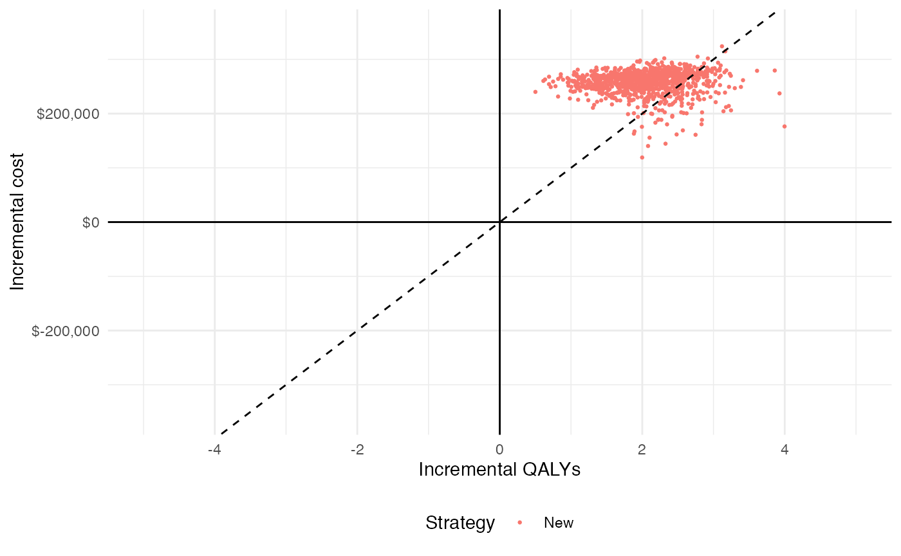

Overview
The prior tutorials have focused on constructing economic models to simulate disease progression, costs, and quality-adjusted life-years (QALYs). While incremental cost-effectiveness ratios (ICERs) have been computed and probabilistic sensitivity analysis (PSA) has been employed, we have not yet formalized cost-effectiveness analysis (CEA) or represented decision uncertainty.
In this analysis we will perform a CEA given the output of model from the “Semi-Markov Multi-state Model” tutorial. We will use the CEA functions from hesim to summarize decision uncertainty and ggplot2 for visualization. The CEA will be peformed for a single target population, but you can review the hesim tutorial on CEA and the references therein for an example of CEA in the context of multiple subgroups.
library("hesim")
library("ggplot2")
library("magrittr")
theme_set(theme_minimal()) # Set ggplot2 themeTheory
CEA is based on estimating the net monetary benefit (NMB). For a given parameter set \(\theta\), the NMB with treatment \(j\) is computed as the difference between the monetized health gains from an intervention less costs, or,
\[ \begin{aligned} NMB(j,\theta) = e_{j}(\theta)\cdot k- c_{j}(\theta), \end{aligned} \]
where \(e_{j}\) and \(c_{j}\) are measures of health outcomes (e.g. QALYs) and costs using treatment \(j\) respectively, and \(k\) is a decision makers willingness to pay (WTP) per unit of health outcomes. The optimal treatment is the one that maximizes the expected NMB,
\[ \begin{aligned} j^{*} = \text{argmax}_j E_{\theta} \left[NMB(j,\theta)\right]. \end{aligned} \]
For a pairwise comparison, treatment \(1\) is preferred to treatment \(0\) if the expected incremental net monetary benefit (INMB) is positive; that is, if \(E_\theta \left[INMB\right] > 0\) where the INMB is given by
\[ \begin{aligned} INMB(\theta) = NMB(j = 1, \theta) - NMB(j = 0, \theta). \end{aligned} \]
Treatments can be compared in an equivalent manner using the incremental cost-effectiveness ratio (ICER). The most common case occurs when a new treatment is more effective and more costly so that treatment \(1\) is preferred to treatment \(0\) if the ICER is less than the WTP threshold \(k\),
\[ \begin{aligned} k > \frac{E_\theta[c_{1} - c_{0}]}{E_\theta[e_{1} - e_{0}]} = ICER. \end{aligned} \] There are three additional cases. Treatment \(1\) is considered to dominate treatment 0 if it is more effective and less costly. Treatment \(1\) is dominated by treatment \(0\) if it is less effective and more costly. Finally, treatment \(1\) is preferred to treatment \(0\) if it is less effective and less costly when \(k < ICER\).
In practice, the distribution of \(\theta\) is simulated from the output of the PSA. Specifically, For each treatment strategy, a PSA produces \(m\) random draws from the distribution of health outcomes and costs,
\[ \begin{aligned} e_{j} &= [e_{j}^1, e_{j}^2, \dots, e_{j}^m] \\ c_{j} &= [c_{j}^1, c_{j}^2, \dots, c_{j}^m]. \end{aligned} \]
Application
CEA can be performed using the hesim::cea() and hesim::cea_pw() functions. cea() summarizes results by taking into account each treatment strategy in the analysis, while cea_pw() summarizes “pairwise” results in which each treatment is compared to a comparator. Both functions return a number of outputs for summarizing a PSA.
The functions are generic functions, meaning that their implementation depends on the class of their input. The default method works on a generic data frame object like we simulated in the non-hesim Markov cohort modeling tutorial.
markov_ce <- readRDS("markov-cohort-ce_sim.rds")
markov_ce## sample strategy dqalys dcosts
## 1: 1 New 22.46453 424193.11
## 2: 1 SOC 19.79403 171692.25
## 3: 2 New 24.63744 411513.48
## 4: 2 SOC 21.75544 139341.69
## 5: 3 New 21.94022 582726.30
## ---
## 1996: 998 SOC 20.36152 74070.17
## 1997: 999 New 24.32977 547848.32
## 1998: 999 SOC 22.45038 296303.99
## 1999: 1000 New 22.92601 469550.31
## 2000: 1000 SOC 20.85917 212142.96However, when a simulation has been conducted with hesim, it is typically more convenient to use the hesim::ce object generated from the economic model (as in the hesim Markov cohort modeling tutorial).
markov_hesim_ce <- readRDS("markov-cohort-hesim-ce_sim.rds")
hesim_dat <- readRDS("markov-cohort-hesim_data.rds")
markov_hesim_ce## $costs
## category dr sample strategy_id costs grp_id
## 1: treatment 0.03 1 1 50047.85 1
## 2: treatment 0.03 1 2 319921.40 1
## 3: treatment 0.03 2 1 50893.24 1
## 4: treatment 0.03 2 2 311568.79 1
## 5: treatment 0.03 3 1 48574.24 1
## ---
## 5996: total 0.03 998 2 386991.39 1
## 5997: total 0.03 999 1 108779.94 1
## 5998: total 0.03 999 2 382416.55 1
## 5999: total 0.03 1000 1 160278.18 1
## 6000: total 0.03 1000 2 431644.78 1
##
## $qalys
## dr sample strategy_id qalys grp_id
## 1: 0.03 1 1 19.61816 1
## 2: 0.03 1 2 22.21128 1
## 3: 0.03 2 1 20.96008 1
## 4: 0.03 2 2 21.65841 1
## 5: 0.03 3 1 19.78163 1
## ---
## 1996: 0.03 998 2 22.63199 1
## 1997: 0.03 999 1 21.57367 1
## 1998: 0.03 999 2 24.31661 1
## 1999: 0.03 1000 1 20.62912 1
## 2000: 0.03 1000 2 23.47866 1
##
## attr(,"class")
## [1] "ce"We focus our illustration on the case where the input is a hesim::ce object.
wtp <- seq(0, 250000, 500) # Willingness to pay per QALY
cea_pw_out <- cea_pw(markov_hesim_ce,
comparator = 1, # Comparator is SOC (ID = 1)
dr_qalys = 0.03, dr_costs = 0.03,
wtp)
cea_out <- cea(markov_hesim_ce,
dr_qalys = 0.03, dr_costs = 0.03,
k = wtp)For completeness, we note that results would be nearly identical using the default method.
cea_pw_out2 <- cea_pw(markov_ce, comparator = "SOC",
k = wtp,
sample = "sample", strategy = "strategy",
e = "dqalys", c = "dcosts")
cea_pw_out$summary## strategy_id grp_id ie_mean ie_lower ie_upper ic_mean ic_lower ic_upper
## 1: 2 1 2.026081 1.010465 3.122949 257712.7 207453.5 285205.2
## icer
## 1: 127197.6
cea_pw_out2$summary## strategy grp ie_mean ie_lower ie_upper ic_mean ic_lower ic_upper icer
## 1: New 1 2.092274 1.038125 3.141643 261594.3 212237.7 291653.5 125028.7Incremental cost-effectiveness ratio
The output of cea_pw() can be used to create an ICER table with icer(), which can, in turn, be formatted for pretty printing with format(). A WTP threshold is needed to compute the INMB and is set with the wtp argument. Estimates of incremental QALYs and incremental costs are computed by averaging over PSA samples. Confidence intervals (CIs) are computed using the quantiles of the PSA and 95% CIs are displayed by default.
labs <- get_labels(hesim_dat)
icer(cea_pw_out, wtp = 50000, labels = labs) %>%
format()## Outcome New
## 1: Incremental QALYs 2.03 (1.01, 3.12)
## 2: Incremental costs 257,713 (207,453, 285,205)
## 3: Incremental NMB -156,409 (-216,556, -77,732)
## 4: ICER 127,198Note that get_labels() was used to create labels for the identification variables in the hesim_data() object. This is useful because it can be passed to summary functions (e.g., icer()) as well as plotting functions (as will be shown below).
Representing decision uncertainty
There are a number of measures that are typically used to represent decision uncertainty including cost-effectiveness planes, cost-effectiveness acceptability curves (CEACs), cost-effectiveness acceptability frontiers (CEAFs), and the expected value of perfect information (EVPI). ggplot2 graphics can be quickly generated with hesim using the functions plot_ceplane(), plot_ceac(), plot_ceaf(), and plot_evpi(). Users who desire more control over plotting may also create custom plots using the output of cea() and cea_pw() as demonstrated below.
Cost-effectiveness plane
The cost-effectiveness plane plots the incremental effectiveness of a treatment strategy (relative to a comparator) against the incremental cost of the treatment strategy. The plot is useful because it demonstrates both the uncertainty and the magnitude of the estimates. Each point on the plot is from a particular random draw from the PSA.
Data for plotting a cost-effectiveness plane comes from the delta output generated from the cea_pw() function, which, for each sampled parameter set and treatment strategy, estimates differences in costs and QALYs relative to the comparator.
head(cea_pw_out$delta)## sample strategy_id grp_id ie ic
## 1: 1 2 1 2.5931256 267265.9
## 2: 2 2 1 0.6983336 256622.1
## 3: 3 2 1 1.9871220 248400.7
## 4: 4 2 1 2.1915320 262577.8
## 5: 5 2 1 2.3335356 278330.3
## 6: 6 2 1 1.5494696 270235.2The dotted line in the plot is the WTP line, with slope equal to the desire value of \(k\) (in this case $100,000). For a chosen \(k\), points below the line are cost-effective while those above it are not.
plot_ceplane(cea_pw_out, k = 100000, labels = labs)
Cost-effectiveness acceptability curves (CEAC)
Simultanous comparison
A useful summary measure for quantifying uncertainty is the probability that each treatment strategy is the most cost effective, which is estimated from simulation output as the proportion of simulation draws that each strategy has the highest NMB.
plot_ceac(cea_out, labels = labs)
The probability that the new treatment is the most cost-effective is increasing in WTP.
Pairwise comparison
The difference between this plot and the one above is that it compares each strategy to a single comparator rather than considering all strategies simultaneously. Since there are only two treatment strategies the distinction is not meaningful, but it can be important when there are 3 or more treatment strategies.
plot_ceac(cea_pw_out, labels = labs)Cost-effectiveness acceptability frontier (CEAF)
One drawback of the CEAC is that the probability of being cost-effective cannot be used to determine the optimal treatment option. Instead, if a decision-makers objective is to maximize health gain, then decisions should be based on the expected NMB. The cost-effectiveness acceptability frontier (CEAF), which plots the probability that the optimal treatment strategy (i.e., the strategy with the highest expected NMB) is cost-effective, is appropriate in this context.
plot_ceaf(cea_out, labels = labs)
Value of perfect information
A limitation of the prior measures are that they ignore the magnitude of cost or QALY gains. A measure which combines the probability of being most effective with the magnitude of the expected NMB is the EVPI, which, intuitively, provides an estimate of the amount that a decision maker would be willing to pay to collect additional data and completely eliminate uncertainty. Mathematically, the EVPI is defined as the difference between the maximum expected NMB given perfect information and the maximum expected NMB given current information. In other words, we calculate the NMB for the optimal treatment strategy for each random draw of the parameters and compare that to the NMB for the treatment strategy that is optimal when averaging across all parameters,
\[ \begin{aligned} EVPI &= E_\theta \left[max_j NMB(j, \theta)\right] - max_j E_\theta \left [ NMB(j, \theta)\right]. \\ \end{aligned} \]
The cea() function performs the EVPI calculation across all simulation draws from the PSA and for a number of WTP values \(k\). A plot by group of the the EVPI for different values of \(k\) is shown below. The kink in the plot represents the value of \(k\) where the optimal strategy changes.
plot_evpi(cea_out)
Custom plotting with ggplot2
As noted above, it is often desirable to have full control over plotting. For this reason, the output of cea() and cea_pw() contain all data required to represent decision uncertainty: the delta element returned by cea_pw() can be used to create a cost-effectiveness plane, the mce element returned by cea() can be used to create a CEAC for simultaneous comparisons and a CEAF, the ceac element returned by cea_pw() can be used to create a CEAC for pairwise comparisons, and the evpi element returned by cea() can be used to plot the EVPI.
We demonstrate each case below, while leveraging a couple of helper functions.
strategy_factor <- function (x) {
factor(x, levels = 1:2, labels = c("SOC", "New"))
}
format_dollar <- function(x) {
paste0("$", formatC(x, format = "d", big.mark = ","))
}Cost-effectiveness plane
ylim <- max(cea_pw_out$delta[, ic]) * 1.1
xlim <- ceiling(max(cea_pw_out$delta[, ie]) * 1.1)
ggplot(cea_pw_out$delta,
aes(x = ie, y = ic, col = strategy_factor(strategy_id))) +
geom_jitter(size = .5) +
xlab("Incremental QALYs") +
ylab("Incremental cost") +
scale_y_continuous(limits = c(-ylim, ylim),
labels = format_dollar) +
scale_x_continuous(limits = c(-xlim, xlim), breaks = seq(-6, 6, 2)) +
theme(legend.position = "bottom") +
scale_colour_discrete(name = "Strategy") +
geom_abline(slope = 100000, linetype = "dashed") +
geom_hline(yintercept = 0) +
geom_vline(xintercept = 0)
Cost-effectiveness acceptability curves (CEAC)
Simultanous comparison
ggplot(cea_out$mce,
aes(x = k, y = prob, col = strategy_factor(strategy_id))) +
geom_line() +
xlab("Willingness to pay") +
ylab("Probability most cost-effective") +
scale_x_continuous(breaks = seq(0, max(wtp), length.out = 6),
label = format_dollar) +
theme(legend.position = "bottom") +
scale_colour_discrete(name = "Strategy")
Pairwise comparison
ggplot(cea_pw_out$ceac,
aes(x = k, y = prob, col = strategy_factor(strategy_id))) +
geom_line() +
xlab("Willingness to pay") +
ylab("Probability most cost-effective") +
scale_x_continuous(breaks = seq(0, max(wtp), length.out = 6),
label = format_dollar) +
theme(legend.position = "bottom") +
scale_colour_discrete(name = "Strategy")
Cost-effectiveness acceptability frontier (CEAF)
ggplot(cea_out$mce[best == 1],
aes(x = k, y = prob, col = strategy_factor(strategy_id))) +
geom_line() +
xlab("Willingness to pay") +
ylab("Probability most cost-effective") +
scale_x_continuous(breaks = seq(0, max(wtp), length.out = 6),
label = format_dollar) +
theme(legend.position = "bottom") +
scale_colour_discrete(name = "Strategy")
Value of perfect information
ggplot(cea_out$evpi, aes(x = k, y = evpi)) +
geom_line() +
xlab("Willingness to pay") +
ylab("Expected value of perfect information") +
scale_x_continuous(breaks = seq(0, max(wtp), length.out = 6),
label = format_dollar) +
scale_y_continuous(label = format_dollar) +
theme(legend.position = "bottom")